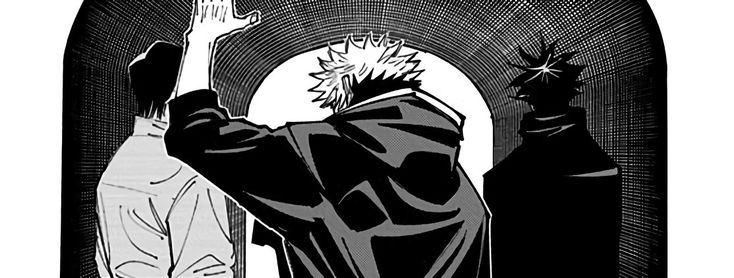

É um anime muito bom, além que acho a maioria dos personagens legais, os vilões também são interessantes e carismáticos, tem uma boa trilha sonora, sem constar as lutas. Recomendo você começar a assistir pelo filme, não é obrigatório, mas como a história do filme se passa 1 ano antes do anime, faz mais sentido (até porquê o one shot que filme se baseia veio antes do mangá)